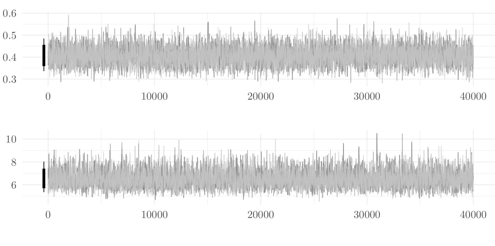
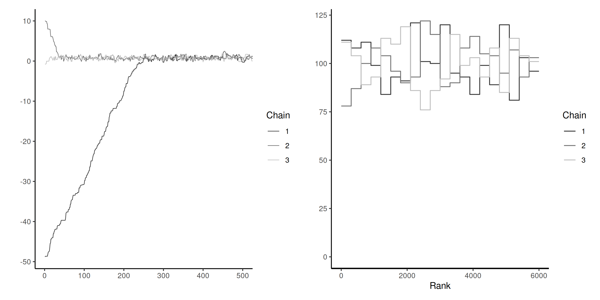

Bayesian modelling
Bayesian workflow and computational strategies
Last compiled Tuesday Jan 28, 2025
Visual diagnostic: trace plots
Display the Markov chain sample path as a function of the number of iterations.
- Run multiple chains to see if they converge to the same target.
- if not, check starting values (compare log posterior) or parameter identifiability!
- Markov chains should look like a fat hairy caterpillar!
bayesplotandcodahave functionalities for plots (trace plot, trace rank, correlograms, marginal densities, etc.)
Checking convergence with multiple chains
Four healthy parallel chains for parameters.
Effective sample size
Are my chains long enough to compute reliable summaries?
Compute the sample size we would have with independent draws by taking \[ \mathsf{ESS} = \frac{B}{\left\{1+2\sum_{t=1}^\infty \gamma_t\right\}} \] where \(\gamma_t\) is the lag \(t\) autocorrelation.
The relative effective sample size is simply \(\mathsf{ESS}/B\): small values indicate pathological or inefficient samplers.
How many samples?
We want our average estimate to be reliable!
We probably need \(\mathsf{ESS}\) to be several hundred
We can estimate the variance of the target to know the precision
(related question: how many significant digits to report?)
In R, via coda::effectiveSize()
Estimating the variance (block method)
- Break the chain of length \(B\) (after burn in) in \(K\) blocks of size \(\approx K/B\).
- Compute the sample mean of each segment. These values form a Markov chain and should be approximately uncorrelated.
- Compute the standard deviation of the segments mean. Rescale by \(K^{-1/2}\) to get standard error of the global mean.
More efficient methods using overlapping blocks exists.
Block means in pictures
Figure 1: Calculation of the standard error of the posterior mean using the batch method.
Cautionary warning about stationarity
Batch means only works if the chain is sampling from the stationary distribution!
The previous result (and any estimate) will be unreliable and biased if the chain is not (yet) sampling from the posterior.
Lack of stationarity
Figure 2: Traceplots of three Markov chains for the same target with different initial values for the first 500 iterations (left) and trace rank plot after discarding these (right). The latter is indicative of the speed of mixing.
Potential scale reduction statistic
The Gelman–Rubin diagnostic, denoted \(\widehat{R}\), is obtained by running multiple chains and considering the difference between within-chain and between-chains variances,
\[\begin{align*} \widehat{R} = \left(\frac{\mathsf{Va}_{\text{within}}(B-1) + \mathsf{Va}_{\text{between}}}{B\mathsf{Va}_{\text{within}}}\right)^{1/2} \end{align*}\]
Any value of \(\widehat{R}\) larger 1 is indicative of problems of convergence.
Bad chains
Figure 3: Two pairs of Markov chains: the top ones seem stationary, but with different modes and \(\widehat{R} \approx 3.4\). The chains on the right hover around zero, but do not appear stable, with \(\widehat{R} \approx 1.6\).
Posterior predictive checks
- For each of the \(B\) draws from the posterior, simulate \(n\) observations from the posterior predictive \(p(\widetilde{\boldsymbol{y}} \mid \boldsymbol{y})\)
- For each replicate, compute a summary statistics (median, quantiles, std. dev., etc.)
- Compare it with the same summary computed for the sample \(\boldsymbol{y}\).
Posterior predictive checks

Figure 4: Posterior predictive checks for the standard deviation (top) and density of posterior draws (bottom) for hierarchical Poisson model with individual effects (left) and simpler model with only conditions (right).
Log pointwise predictive density
Consider the expected value of the log observation-wise log density with respect to the posterior distribution \(p(\boldsymbol{\theta} \mid \boldsymbol{y})\), \[\begin{align*} \mathsf{LPPD}_i = \mathsf{E}_{\boldsymbol{\theta} \mid \boldsymbol{y}} \left\{ \log p(y_i \mid \boldsymbol{\theta})\right\}, \end{align*}\]
The higher the value of \(\mathsf{LPPD}_i\), the better the fit for that observation.
Widely available information criterion
To build an information criterion, we add a penalization factor that approximates the effective number of parameters in the model, with \[\begin{align*} n\mathsf{WAIC} = -\sum_{i=1}^n \mathsf{LPPD}_i + \sum_{i=1}^n \mathsf{Va}_{\boldsymbol{\theta} \mid \boldsymbol{y}}\{\log p(y_i \mid \boldsymbol{\theta})\} \end{align*}\] where we use again the empirical variance to compute the rightmost term.
Smaller values of \(\mathsf{WAIC}\) are better.
Bayesian leave-one-out cross validation
In Bayesian setting, we can use the leave-one-out predictive density \[p(y_i \mid \boldsymbol{y}_{-i})\] as a measure of predictive accuracy. the
We can use importance sampling to approximate the latter.
Requirement: need to keep track of the log likelihood of each observation for each posterior draw (\(B \times n\) values).
LOO-CV diagnostics
We can draw \(B\) samples from \(p(\widetilde{y} \mid \boldsymbol{y}_{-i})\) and compute the rank of \(y_i\).
Under perfect calibration, ranks should be uniform.
Leave-one-out with quantile-quantile plots
Figure 5: Quantile-quantile plots based on leave-one-out cross validation for model for the hierarchical Poisson model fitted to the Upworthy data with the individual random effects (left) and without (right).
References